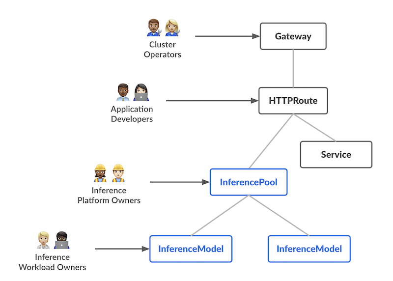
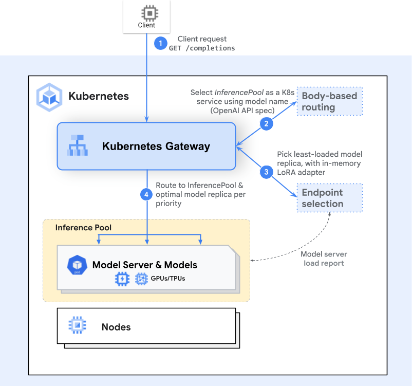

Introduction¶
Gateway API Inference Extension is an official Kubernetes project focused on extending Gateway API with inference specific routing extensions.
The overall resource model focuses on 2 new inference-focused personas and corresponding resources that they are expected to manage:

Key Features¶
Gateway API Inference Extension, along with a reference implementation in Envoy Proxy, provides the following key features:
-
Model-aware routing: Instead of simply routing based on the path of the request, Gateway API Inference Extension allows you to route to models based on the model names. This is enabled by support for GenAI Inference API specifications (such as OpenAI API) in the gateway implementations such as in Envoy Proxy. This model-aware routing also extends to Low-Rank Adaptation (LoRA) fine-tuned models.
-
Serving priority: Gateway API Inference Extension allows you to specify the serving priority of your models. For example, you can specify that your models for online inference of chat tasks (which is more latency sensitive) have a higher Criticality than a model for latency tolerant tasks such as a summarization.
-
Model rollouts: Gateway API Inference Extension allows you to incrementally roll out new model versions by traffic splitting definitions based on the model names.
-
Extensibility for Inference Services: Gateway API Inference Extension defines extensibility pattern for additional Inference services to create bespoke routing capabilities should out of the box solutions not fit your needs.
-
Customizable Load Balancing for Inference: Gateway API Inference Extension defines a pattern for customizable load balancing and request routing that is optimized for Inference. Gateway API Inference Extension provides a reference implementation of model endpoint picking leveraging metrics emitted from the model servers. This endpoint picking mechanism can be used in lieu of traditional load balancing mechanisms. Model Server-aware load balancing ("smart" load balancing as its sometimes referred to in this repo) has been proven to reduce the serving latency and improve utilization of accelerators in your clusters.
API Resources¶
Head to our API overview to start exploring our APIs!
Composable Layers¶
This project aims to define specifications to enable a compatible ecosystem for extending the Gateway API with custom endpoint selection algorithms. This project defines a set of patterns across three distinct layers of components that are relevant to this project:
Gateway API Implementations¶
Gateway API has more than 25 implementations. As this pattern stabilizes, we expect a wide set of these implementations to support this project.
Endpoint Selection Extension¶
As part of this project, we're building an initial reference extension. Over time, we hope to see a wide variety of extensions emerge that follow this pattern and provide a wide range of choices.
Model Server Frameworks¶
This project will work closely with model server frameworks to establish a shared standard for interacting with these extensions, particularly focused on metrics and observability so extensions will be able to make informed routing decisions. The project is currently focused on integrations with vLLM and Triton, and will be open to other integrations as they are requested.
Request Flow¶
To illustrate how this all comes together, it may be helpful to walk through a sample request.
-
The first step involves the Gateway selecting the correct InferencePool (set of endpoints running a model server framework) or Service to route to. This logic is based on the existing Gateway and HTTPRoute APIs, and will be familiar to any Gateway API users or implementers.
-
If the request should be routed to an InferencePool, the Gateway will forward the request information to the endpoint selection extension for that pool.
-
The extension will fetch metrics from whichever portion of the InferencePool endpoints can best achieve the configured objectives. Note that this kind of metrics probing may happen asynchronously, depending on the extension.
-
The extension will instruct the Gateway which endpoint the request should be routed to.
-
The Gateway will route the request to the desired endpoint.

Who is working on Gateway API Inference Extension?¶
This project is being driven by WG-Serving SIG-Network to improve and standardize routing to inference workloads in Kubernetes. Check out the implementations reference to see the latest projects & products that support this project. If you are interested in contributing to or building an implementation using Gateway API then don’t hesitate to get involved!